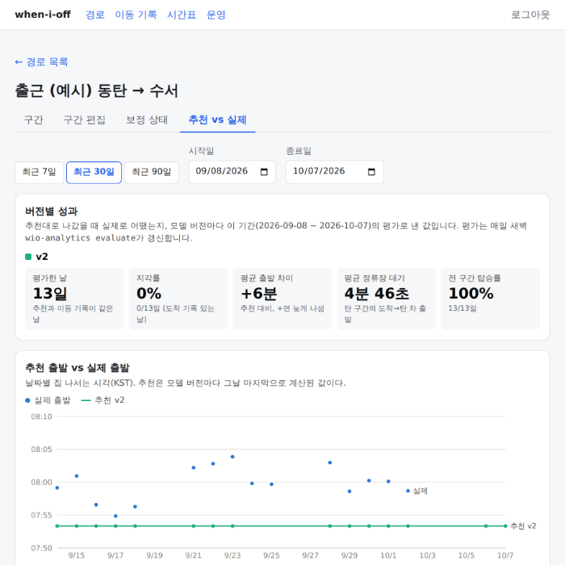
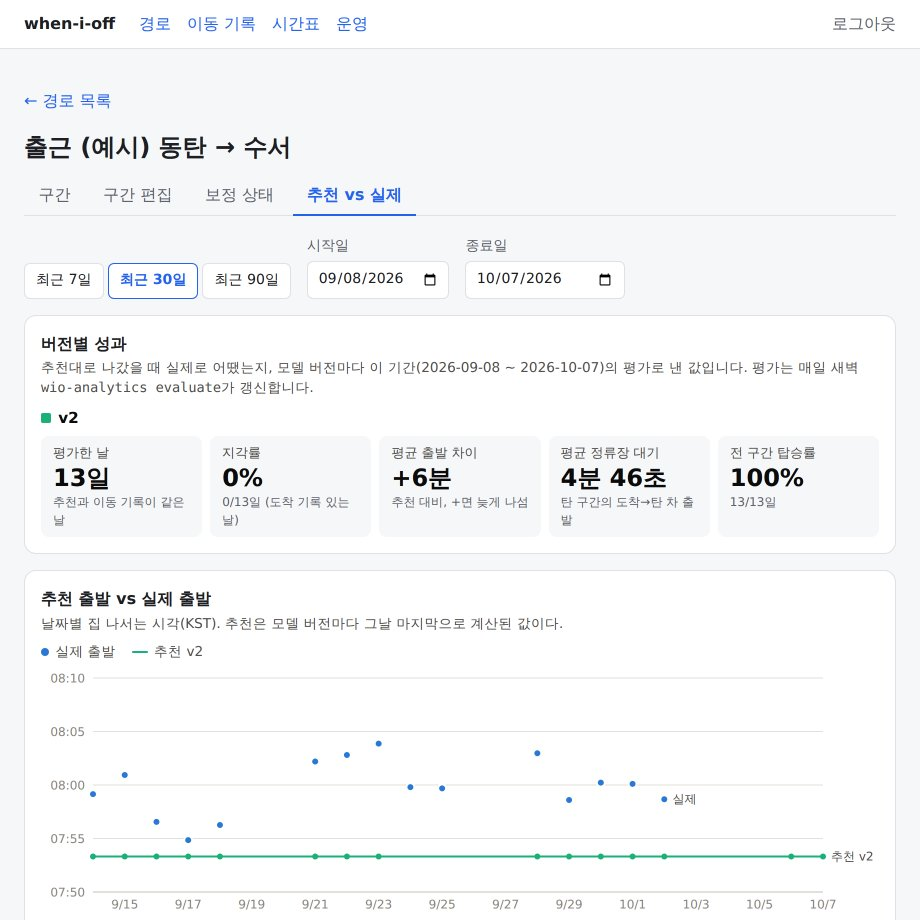
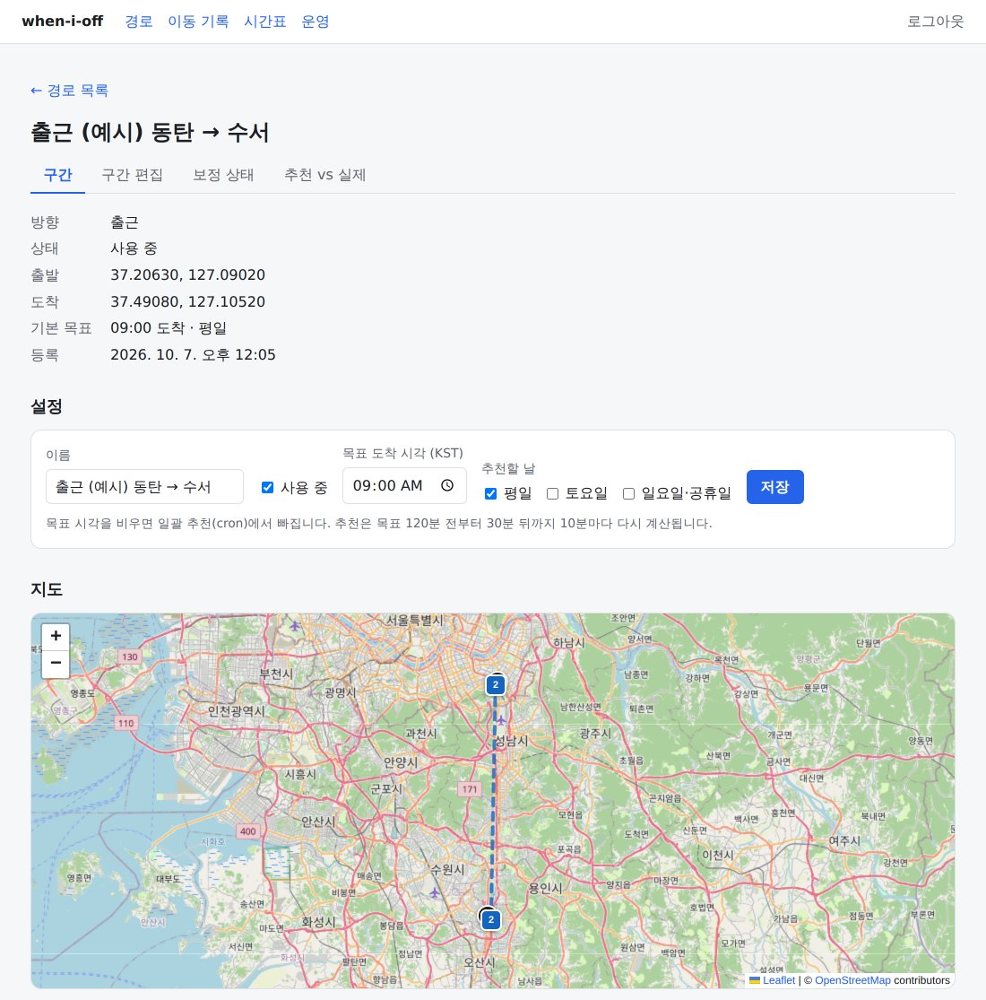
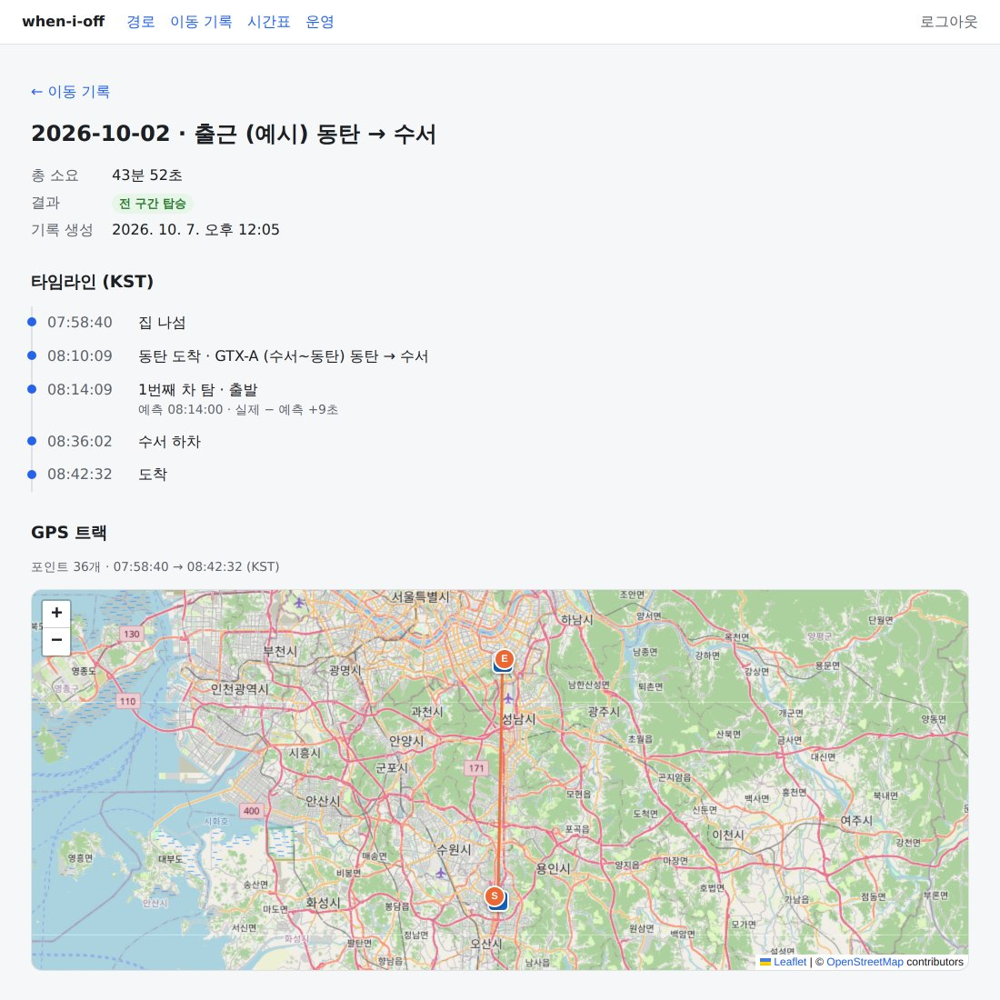

“아 언제 나가야 하냐”
지각 확률로 답합니다
광역버스·GTX·지하철처럼 한 대 놓치면 15~30분을 기다려야 하는 출근길. When I Off는 실시간 도착정보와 내가 실제로 탔던·놓쳤던 기록을 합쳐 “몇 시 몇 분에 나가면 몇 % 확률로 제시간에 도착하는지”를 계산합니다.

감 대신 근거로 정하는 출발 시각
지도 앱의 “예상 소요 시간”은 평균입니다. 하지만 출근에서 중요한 건 평균이 아니라 그 차를 탈 수 있느냐입니다. 도보 몇십 초, 신호 한 번 차이로 결과가 갈리니까요.
내 걸음 속도
GPS 기록으로 집→정류장, 환승 통로처럼 구간마다 실제로 걸린 시간을 학습합니다.
도착 예측의 오차
“3분 후 도착”이 실제로는 언제였는지 기록과 비교해, 노선·정류장·시간대별 오차를 보정합니다.
신호등 대기
도보 경로의 횡단보도마다 신호 주기를 반영해 평균 대기 시간까지 출발 시각에 더합니다.
동작 방식
iPhone 앱이 출근길을 자동으로 기록하고, 서버가 실시간 정보를 모으고, 분석 배치가 확률을 계산합니다. 데스크톱 웹에서는 추천이 실제로 맞았는지 확인합니다.
-
경로 등록
데스크톱 웹 지도에서 집 → 정류장/역 → 노선 → 하차 → 회사 구간과 지나는 횡단보도를 등록합니다.
-
iOS 자동 기록
정류장·역에 geofence를 걸어 도착·출발 시각을 자동으로 남기고, 정류장에서는 탔음 / 놓쳤음 버튼 한 번으로 결과를 기록합니다.
-
실시간 도착정보 수집
출퇴근 시간대에만 버스 도착예측(TAGO), 지하철 실시간 도착정보(서울시), 신호등 정보를 주기적으로 수집해 기록 시점의 예측값과 함께 저장합니다.
-
확률 계산
목표 도착 시각에서 거꾸로 구간별 소요 시간 분포를 합성해, 출발 시각별 “제시간 도착 확률”을 계산합니다.
-
출발 알림
추천 시각이 되면 iPhone에 “지금 나가세요 (성공 확률 P%)” 알림을 보냅니다.
-
추천 vs 실제 비교
데스크톱 웹에서 날짜별 추천 출발과 실제 출발·도착, 지각 여부를 비교하고 모델 버전별 성과를 확인합니다.
기록이 쌓일수록 계산이 내 출근길에 맞춰집니다. 표본이 적은 동안은 보수적인 기본값을 쓰고, 추천에 쓰인 실측 표본 수를 함께 보여 줍니다.
화면
실제 동작하는 데스크톱 웹 화면입니다.



화면의 경로와 기록은 공개 장소(동탄역 → GTX-A → 수서역)를 기준으로 만든 예시 데이터입니다. 지도 © OpenStreetMap contributors.
사용하는 공공데이터
아래 공공데이터를 활용합니다. 각 데이터의 저작권과 이용 조건은 제공 기관에 있습니다.
| 데이터 | 제공 기관 | 용도 | 상태 |
|---|---|---|---|
|
버스노선정보 · 버스도착정보 (TAGO) 공공데이터포털 |
국토교통부 | 노선·정류장 정보, 정류장별 버스 도착예측 수집 | 사용 중 |
|
서울시 지하철 실시간 도착정보 서울 열린데이터광장 |
서울특별시 | 지하철 구간의 열차 도착 예측 수집, 탑승 기록과 오차 비교 | 연동 준비 중 |
|
전국통합데이터 실시간 신호등 정보 공공데이터포털 |
행정안전부 · 한국지역정보개발원(KLID) | 교차로 위치, 신호 잔여시간(제공 지역), 보행 대기 시간 추정 | 사용 중 |
| GTX-A 열차 시간표 | GTX-A 운영사 공개 시간표 | 실시간 정보가 없는 노선의 정적 시간표 | 사용 중 |
| OpenStreetMap 지도 | OpenStreetMap contributors | 데스크톱 웹의 경로·GPS 트랙 지도 | 사용 중 |
개발 현황
개인 프로젝트 · 개발 중
한 사람의 실제 출근길(광역버스·GTX·지하철)에 맞춰 만들고 있는 비상업 개인 프로젝트입니다. 소스 코드는 GitHub에 공개되어 있습니다.
구성
iOS 앱(Swift) · 서버(Kotlin/Spring, PostgreSQL) · 분석 배치(Python) · 데스크톱 웹(TypeScript/React).
개인정보
위치·이동 기록은 사용자 본인이 운영하는 서버에만 저장하고, 제3자에게 제공하거나 광고·분석 도구로 보내지 않습니다. 개인정보 처리 안내
문의
질문이나 제안은 GitHub 이슈로 남겨 주세요 — github.com/kangsiwoo/when-i-off